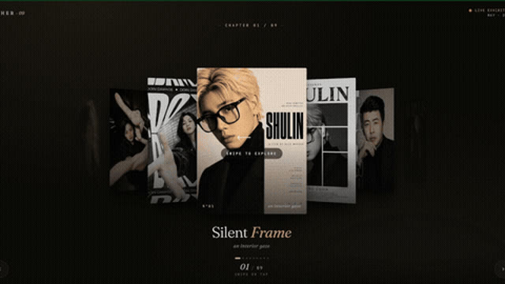
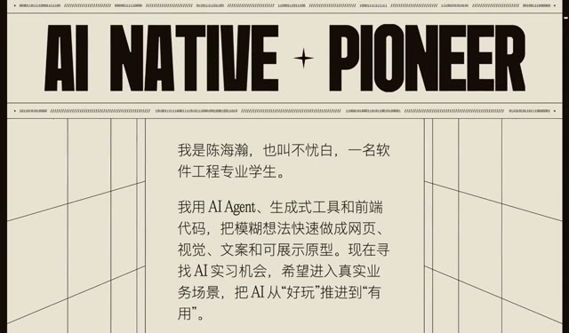
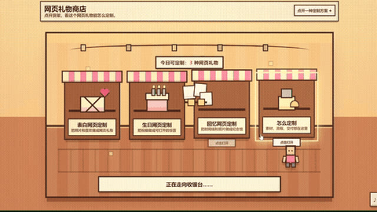
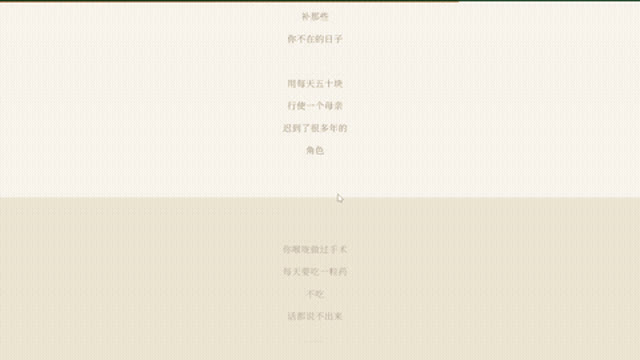
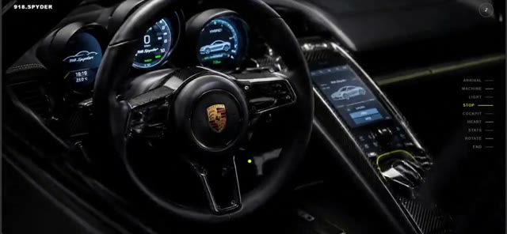
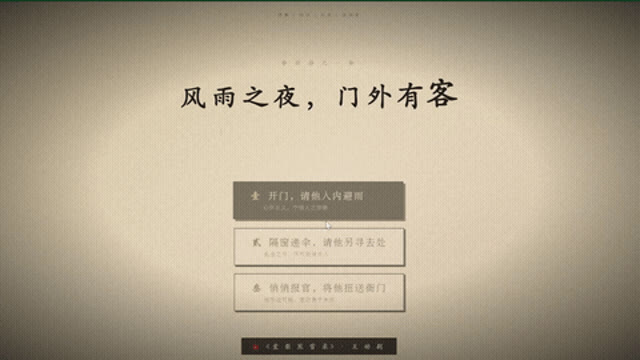
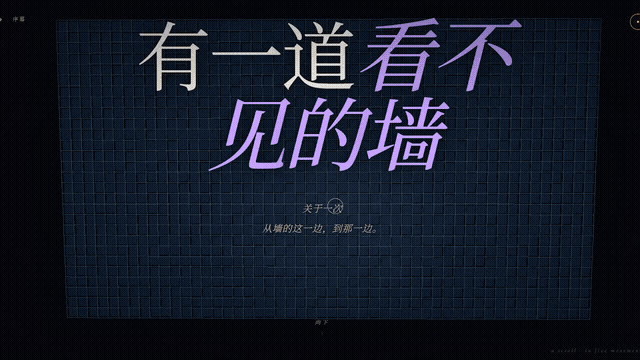
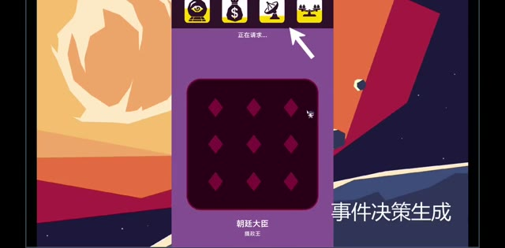
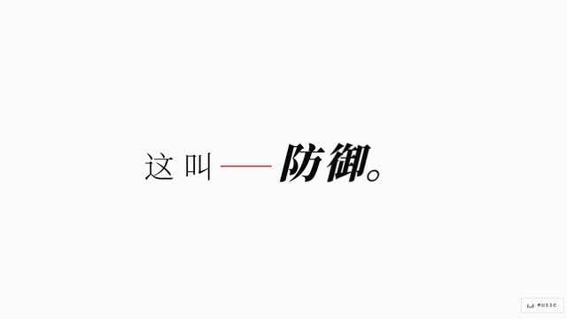

星野
AI 赋能，创意无限
大学生？
似乎是廉价的代名词。
我们这群大学生什么都没有。
没钱，没有资源，没有高认知，没有技术。
就业形势严峻，学历极速贬值。
这一代年轻人的未来，
似乎看不到光芒。
但
一次偶然，
AI 开始频繁出现在这个社群。
接下来的 40 天
每个人每天 10 小时，近乎疯狂地使用 AI
这群年轻人，便造出了——
一切东西，如泉涌般出现。
同一个社群 · 飞速生长
0人
初始社群
0人
如今
0+
个作品
Works
0
类创作
Formats
∞
种可能
Possibilities
Chapter 01视觉创造
商业海报？个人写真？品牌设计？
随便挑。
Chapter 02网站开发
开发网站？
这些都是他们从零搭建的。
Chapter 03小程序 · 软件 · 产品
小程序？软件？游戏？
几天开发出来，质感却像打磨了几个月。
Chapter 04AI 自动化 · 企业部署
AI 自动化？
他们已经在帮企业老板部署了。
我们相信
AI 时代
年轻人
无限希望
火种，从一个人开始。
十个人，把它传了下去。
一百个，五百个，互相照亮。
直到灯火，落满整片土地。